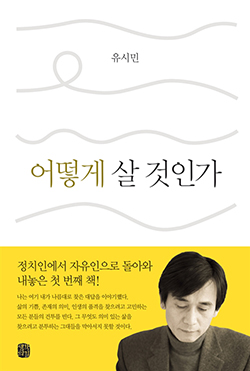

그런데 이런 내가 좀 아는 밴드가 하나 있다. 크라잉넛Crying Nut이다. 개인적으로 아는 게 아니라 그냥 대중음악 소비자로서 안다. 공식 홈페이지에서 크라잉넛은 '대한민국 록계를 말 달려온 펑크록의 최강자'를 자처한다. 이렇게 오만방자한 공식 프로필을 다른 데서는 본 적이 없다. 그냥 강자도 아니고 최강자라니! 록Rock이란 시끄러운 밴드와 목소리 탁한 가수가 제멋대로 뛰어다니며 몸을 비틀고 머리를 돌리고 소리를 마구 질러대는 장르다. 나는 그렇게 이해한다. 그런데 록 앞에 펑크Punk가 붙었다. 이건 또 뭐지? 지식 검색을 열심히 했지만 딱 와닿는 대답을 얻지는 못했다. 크라잉넛이 하는 유난히 시끄러운 록이 펑크록인가 보다. 그냥 그렇게 넘어가기로 했다.
밴드 이름도 좀 그렇다. 도대체 무슨 사연이 있기에 호두가 운다는 말인가. 크라잉넛 멤버들은 대중이 좋아하는 음악이 아니라 자기네가 하고 싶은 음악을 했다. 그렇게 하면 돈이 잘 벌리지 않는다.
그들은 좋아하는 놀이를 직업으로 삼았따. 이것만으로도 '절반' 성공한 인생이라고 말할 수 있다. 물론 그들의 인생이 완성된 것은 아니다. 일과 놀이가 인생의 절반이라면 나머지 절반은 사랑과 연대solidarity라고 나는 믿는다.
삶이 사랑과 환희와 성취감으로 채워져야 마땅하다고 생각하지만 좌절과 슬픔, 상실과 이별 역시 피할 수 없는 삶의 한 요소임을 받아들인다.
거리감을 가지도 대해야 하는 것이 삶만은 아닐 것이다. 죽음에 대해서도 그렇게 하는 것이 맞다. 나는 어차피 죽는다. 관 뚜껑에 못이 박히기 전에는 사람을 평가할 수 없다고들 하지만, 사람에 대한 평가는 관 뚜껑이 닫히고 한참 지난 뒤에도 달라질 수 있다. 그러나 그렇다고 한들, 내가 이미 죽고 없는데 내게 무슨 의미가 있다는 말인가.
내 삶에 대한 평가는 살아 있는 동안만 내게 의미가 있는 것이다.
의식이 있어도 그러할진대, 아예 의식 자체가 없다면 말해 무엇하겠는가. 이런 경우 의학적 연명치료는 단순히 의미가 없는게 아니라 사람을 모욕하고 존엄을 짓밟는 것이라고 생각한다.
그런데 원칙적으로 볼 때, 죽기 위해서 국가나 사회의 허락을 받을 이유는 없다. 사는 것도 죽는 것도 본질적으로 나의 자유이며 권리이다. 국가는 나를 죽일 권한이 없으며 살라고 명령할 권한도 없다. 타인에게 부당한 피해를 주지 않는 한, 삶에 대해서든 죽음에 대해서든 국가나 사회가 나의 의사 결정에 간섭해서는 안 된다. 자기 방식대로 살고, 자기 방식대로 죽는 것은 만인에게 주어진 자연법적 권리이다. 실제로도 많은 사람들이 법원의 허락을 구하지 않고 스스로 선택한 방식으로 죽는다.
치료를 거부하고 곡기를 끊어 스스로 삶을 마감한 '김 교수'의 죽음, 손가락 까닥할 수 없는 조건에서도 연구와 집필을 그치지 않는 호킹 박사의 삶, 이 둘 모두 존엄하다고 나는 생각한다. 그 선택의 기초가 바로 당사자의 자유의지이기 때문이다. 자유의지는 자신이 자기 삶의 주인임을 인식하면서 원하는 삶을 스스로 설계하고 그 삶을 자신이 옳다고 생각하는 방식으로 밀고나가는 정신의 태도와 능력이다. 인간의 존엄은 바로 여기에서 나온다. 철학자 밀의 말처럼, 사람은 누구든지 자신의 삶을 자기 방식대로 살아가는 것이 바람직하다. 그 방식이 최선이어서가 아니라, 자기 방식대로 사는 길이기 때문이다. 어디 사는 것만 그렇겠는가. 죽는 것 역시 자기 방식대로 죽는 것이 바람직하다.
그러나 자유의지가 제멋대로 살고 제 마음대로 죽는 것을 무조건 정당화하지는 않는다. 자유의지를 발현할 때 지켜야 할 규칙 또는 도덕법이 있다. 칸트는 이 규칙을 이성이 내리는 '정언명령'이라 했다. 그는 경험의 도움이 없어도 사람은 이 규칙을 인식할 수 있다고 주장했다.
좋은 혁신 아이디어와 제도 개선책을 만든다고 해서 혁신을 성공시킬 수 있는 것은 아니다. 변화를 거부하는 기득권층의 저항을 극복할 수 있는 전략을 세우고 혁신의 동력을 확보하지 않으면 옳은 개혁도 실패한다.
내게 정치는 연대의 한 방법이었다. 연대는 아픔과 기쁨에 대한 공감을 바탕으로 다른 사람과 손을 잡고 사회적인 선과 미덕을 실현하는 행위이다. 그런 점에서 내게 정치는 스무 살에 야학교사를 한 것과 방식만 다를 뿐 본질은 같은 것이었다.
진보정당은 인간 본성 가운데 '진화적으로 새롭고 생물학적으로 덜 자연스러운' 것을 대변하고 부추기는 정당이다. 자유, 정의, 나눔, 봉사, 평등, 평화, 생태 보호를 추구하는 것은 진화적으로 새롭고 생물학적으로 덜 자연스러운 행동이다.